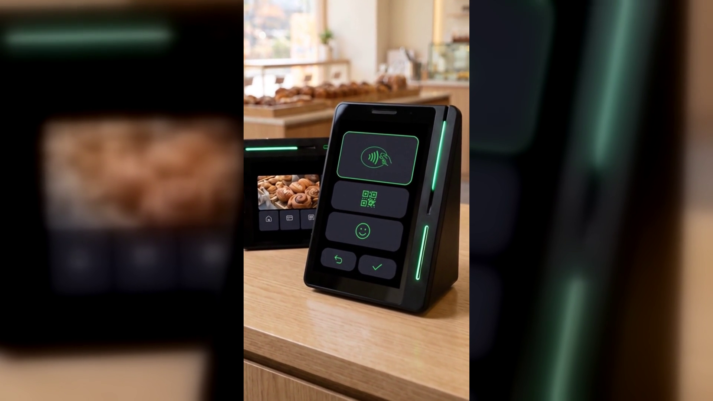

손님이 꺼내는 결제 수단이 다 다른데, 단말기 한 대로 받을 수 있을까요?
받을 수 있습니다. 네이버페이 커넥트는 카드, QR, 페이스사인, 삼성페이까지 한 대에서 처리합니다.
아래에서 왜 이 문제가 생기는지, 그리고 계산대에서 어떻게 정리되는지 순서대로 정리했습니다.
계산이 늦어지는 이유는 대부분 금액 때문이 아닙니다. 손님이 무엇을 꺼내는지가 매번 다르기 때문입니다.
어떤 손님은 카드를 내밀고, 어떤 손님은 폰 화면을 켜서 내밀고, 어떤 손님은 QR을 띄웁니다.
받을 수 있는 수단이 정해져 있는 매장에서는 그때마다 사장님이 설명을 해야 합니다.
"그건 저희가 안 되고요, 카드로 부탁드립니다."
이 한 문장이 하루에 몇 번씩 반복됩니다. 손님은 지갑을 다시 열고, 뒤에 선 사람은 기다립니다.
피크타임에는 그 한 사람이 줄 전체를 붙잡습니다.
결제 수단이 늘어난 속도를 매장이 따라가지 못했기 때문입니다.
예전에는 현금과 카드 두 가지였고, 그 두 개만 받으면 사실상 전부를 받는 것이었습니다.
지금은 다릅니다. 폰으로 결제하는 손님이 있고, 얼굴을 인식시키는 손님이 있고,
해외에서 온 손님은 자국에서 쓰던 결제 앱을 그대로 꺼냅니다.
문제는 이 수단들이 각각 다른 장비나 다른 절차를 요구하는 경우가 많다는 점입니다.
그래서 매장은 이렇게 대응해 왔습니다. 단말기를 하나 더 놓고, 거치대를 하나 더 놓고,
어떤 것은 사장님이 손으로 처리하고. 결국 계산대가 복잡해집니다.
장비가 늘어나면 익혀야 할 것도 늘어나고, 직원이 바뀔 때마다 다시 설명해야 합니다.
그리고 그 복잡함은 손님에게 그대로 보입니다.
네이버페이 커넥트는 손님이 꺼내는 것을 한 대에서 받는 쪽으로 정리한 기기입니다.
공식 안내 기준으로 카드, QR, 페이스사인, 삼성페이까지
손님이 원하는 결제 수단을 한 대에서 받습니다.
카드는 꽂거나 대면 되고, 폰은 대면 되고, QR과 바코드는 화면에 띄우면 됩니다.
페이스사인은 얼굴로 결제하는 손님을 위한 방식입니다.
위챗페이와 알리페이플러스도 지원합니다. 외국인 손님이 자주 오는 상권이라면
따로 준비하지 않아도 같은 자리에서 계산이 끝납니다.
기기 생김새도 계산대를 복잡하게 만들지 않는 쪽입니다.
유광 검정에 쐐기 모양이고, 화면이 둘입니다. 사장님이 보는 세로 화면과 손님 쪽 작은 화면입니다.
옆면에는 초록색 LED가 한 줄 들어옵니다.
커피컵 정도 높이라 카운터에 그냥 올려두면 되고, 별도의 기둥 스탠드가 필요하지 않습니다.
쓰는 방법은 지금과 크게 다르지 않습니다. 금액을 넣고, 손님이 꺼낸 것을 대면 됩니다.
달라지는 것은 사장님이 "그건 안 됩니다"라고 말할 일이 줄어든다는 점입니다.
손님이 폰을 꺼내면 폰으로, 카드를 꺼내면 카드로, QR을 띄우면 QR로 그대로 이어집니다.
직원에게 가르칠 것도 적습니다. 수단별로 다른 장비를 안내하지 않아도 되니
"이건 여기, 저건 저기"를 외울 필요가 없습니다.
결제가 끝난 뒤도 그 자리에서 이어집니다.
손님 쪽 화면에 네이버 리뷰가 뜨고, 「커피가 맛있어요」 같은 키워드를 고르면
네이버페이 포인트가 적립되고 쿠폰이 제공됩니다.
결제 데이터로 고객 취향을 파악해 쿠폰과 적립, 맞춤 혜택을 자동으로 주는 기능도 있고,
손님이 매장에 머무는 동안 매장 소식과 이벤트를 화면으로 알릴 수도 있습니다.
공식 안내에는 앞으로도 매장 운영에 도움이 될 새로운 기능이 추가될 예정이라고 되어 있습니다.
(일부 서비스는 오픈 준비 중입니다.)
결제 수단은 손님이 정합니다. 매장이 정하는 것이 아닙니다.
그래서 매장이 할 수 있는 준비는 하나뿐입니다. 무엇을 꺼내도 받을 수 있게 해 두는 것입니다.
카드, QR, 페이스사인, 삼성페이를 한 대로 받으면 계산대에서 멈추는 순간이 사라지고,
설명하느라 쓰던 시간이 줄고, 줄이 짧아집니다.
누리네트웍스는 수도권 POS·결제단말 대리점입니다.
정품 신제품 보증, 수도권 직영 설치로 진행합니다.
매장 상황에 맞는 구성이 궁금하시면 상담으로 확인해 보십시오.
누리네트웍스 · 결제는 더 쉽게, 매장은 더 스마트하게
🔗 https://nwpos.co.kr?utm_source=youtube&utm_medium=social&utm_campaign=daily7&utm_content=connect-pay
#네이버단말기 #네이버커넥트 #Npay커넥트 #네이버페이단말기 #네이버리뷰 #매장리뷰 #매장홍보 #단골관리 #쿠폰적립 #포인트적립 #사인패드 #결제단말기 #카드단말기 #포스기 #포스 #간편결제 #카드결제 #매장운영 #매장관리 #자영업 #소상공인 #자영업노하우 #개인사업자 #가맹점 #창업준비 #누리포스 #누리네트웍스 #Shorts
[SNS아이콘]
[SNS배너]